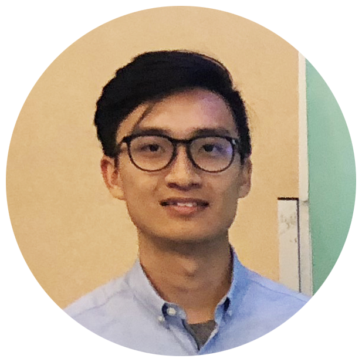

Our Team


Kenneth is fourth-year Software Engineering student in University of Victoria. He is passionated in both software development and UI/UX designs. He is a 'hacker' at heart and he loves to work on cool projects. He came up with the Drive With Friends project and took charge of the main game client design and implementation.
Jia is a fourth-year Software Engineering student graduating in September 2018. Over her degree she has working experience in Web Development and Data Visualization field. In this project, Jia developed most of backend functionalities, which includes but not limited to game workflow, socket communication, backend game logic, and etc. Jia is currently interested in pursuing jobs related to Software development.
Zheng is a fourth-year software engineering student who has interests in IOS development and Web development. Zheng is currently interested pursuing full-time jobs after graduation and is looking into front-end web technologies and IT industry. After graduation, Zheng plans to stay in Victoria to pursue his career and spend time exploring the corners of BC. For this project, I did the development of socket, game motion control, and DevOps.
Dr. Pan JianPing
Project Supervisor
Dr. Jianping Pan is currently a professor of computer science at the University of Victoria, Victoria, British Columbia, Canada. He received his Bachelor's and PhD degrees in computer science from Southeast University, Nanjing, Jiangsu, China, and he did his postdoctoral research at the University of Waterloo, Waterloo, Ontario, Canada. He also worked at Fujitsu Labs and NTT Labs. His area of specialization is computer networks and distributed systems, and his current research interests include protocols for advanced networking, performance analysis of networked systems, and applied network security.